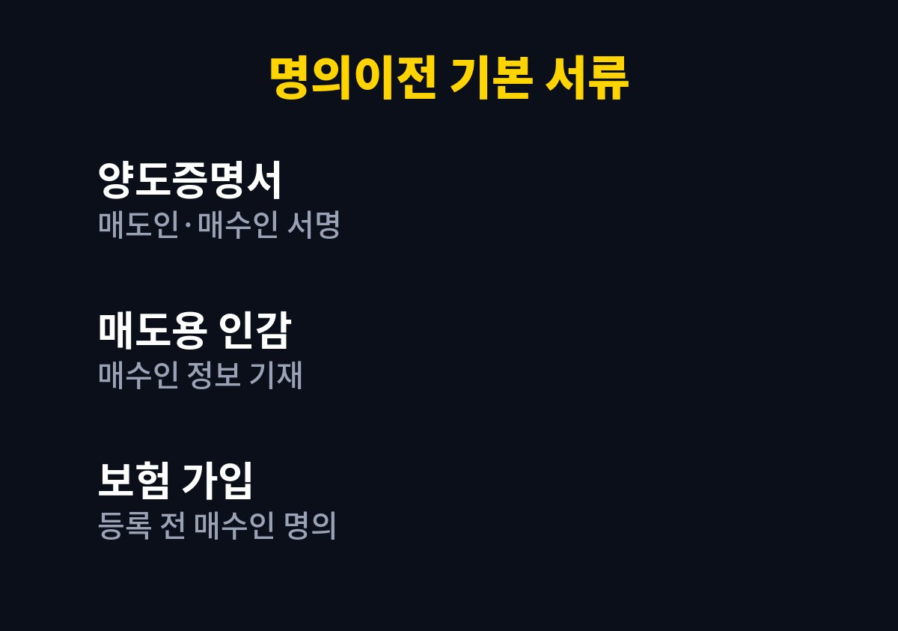
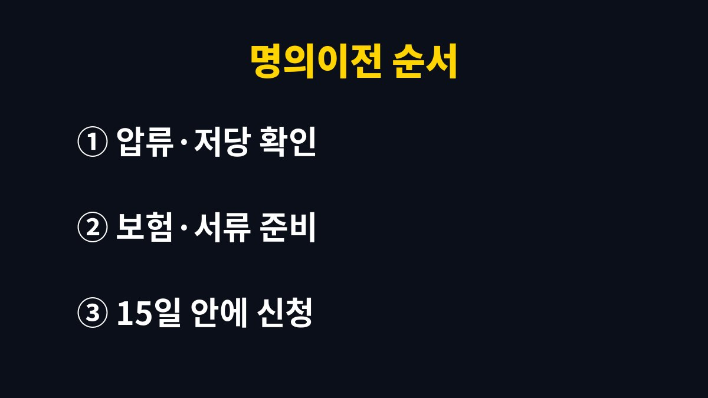

중고차 명의이전은 직거래라면 매매한 날부터 15일 안에 산 사람이 이전등록을 신청해야 하고, 서류는 양도증명서·매도용 인감증명서·신분증·보험 가입 네 가지가 기본이다.
기한을 넘기면 과태료 대상이 된다.
매매상사를 거치면 상사가 대신 처리하는 일이 많아, 여기서는 지인이나 직거래 앱으로 차를 사고판 경우를 기준으로 적었다.
자동차관리법상 이전등록을 신청할 의무는 양수인, 즉 차를 산 사람에게 있다.
기한은 매매한 날부터 15일이다.
산 사람이 미루면 곤란해지는 쪽은 오히려 판 사람이다.
명의가 그대로 남아 있으면 그 뒤에 생긴 과태료나 자동차세 고지서가 판 사람 앞으로 갈 수 있다.
그래서 양수인이 신청하지 않을 때는 판 사람도 이전등록을 신청할 수 있게 되어 있다.
국토교통부가 운영하는 자동차365 누리집에서 이전등록을 온라인으로 신청할 수 있다.
매도인과 매수인 모두 본인 인증을 거쳐야 하고, 차 상태에 따라 온라인 처리가 안 되면 차량등록사업소나 구청 자동차등록 창구를 찾아가면 된다.
온라인 신청은 판 사람이 먼저 양도 신청을 올리고, 산 사람이 이어서 인수 신청과 취득세 납부를 하는 식으로 진행된다.
두 사람이 같은 날 시간을 맞추면 하루 안에 끝나는 경우가 많다.
| 서류·절차 | 준비하는 사람 | 확인할 점 |
|---|---|---|
| 양도증명서 | 매도인·매수인 함께 | 매매금액과 잔금일을 실제와 같게 적는다 |
| 자동차 매도용 인감증명서 | 매도인 | 매수인 성명·주소가 들어가야 한다 |
| 신분증 | 매수인 | 대리 신청이면 위임장을 더한다 |
| 자동차보험 | 매수인 | 등록 전에 매수인 명의로 가입한다 |
| 취득세 | 매수인 | 비영업용 승용차는 7%다 |

매도용 인감증명서는 발급할 때 매수인 인적사항을 적어야 해서, 판 사람은 산 사람의 이름과 주소를 미리 받아 두어야 한다.
인감 대신 본인서명사실확인서로 갈음할 수도 있다.
취득세는 실제 거래가격을 기준으로 하되, 신고한 금액이 시가표준액보다 낮으면 시가표준액으로 매긴다.
경차는 세율과 감면이 달라 위택스에서 미리 세액을 계산해 보면 된다.

직거래에서 생기는 문제는 대부분 서류 한 장이 빠졌거나 순서가 바뀐 데서 나온다.
특히 아래 세 가지는 잔금을 치른 뒤에야 알게 되는 일이 잦다.
취득세를 아끼려고 매매금액을 낮게 적자는 제안을 받는 경우가 있다.
시가표준액보다 낮으면 어차피 시가표준액으로 세금이 붙으니 아낄 수 있는 돈이 거의 없다.
실제와 다른 금액은 나중에 분쟁이 생겼을 때 증거로도 쓸 수 없다.
주말에 잔금을 치르고 월요일에 등록하러 갔는데, 인감증명서에 매수인 주소가 빠져 있으면 판 사람이 다시 떼어 와야 한다.
15일 기한이 이런 일로 금방 줄어든다.
서류를 받는 자리에서 매수인 칸부터 확인하면 된다.
판 사람의 보험은 판 사람 기준이라, 산 사람이 운전하다 사고가 나면 보상을 못 받을 수 있다.
잔금 당일 바로 차를 가져올 생각이라면 보험 가입을 계약 전날까지 끝내 두는 편이 안전하다.
나는 대행 수수료가 아까워 직접 처리했지만, 압류가 걸린 차라면 해제 확인까지 복잡해서 대행을 맡기는 쪽이 낫다고 본다.
서류가 다 갖춰져 있으면 이전등록 자체는 오래 걸리지 않는다.
판 사람은 등록이 끝났다는 연락을 받을 때까지 차량번호와 매수인 연락처를 지워 두지 않는 편이 낫다.
다음으로 할 일은 등록이 끝난 뒤 자동차세가 새 명의로 넘어갔는지 위택스에서 확인하는 것이다.
압류 해제나 상속 차량처럼 사정이 얽힌 경우는 관할 차량등록사업소에 먼저 전화로 묻는 게 빠르다.
※ 2026년 기준 공공기관 안내를 바탕으로 정리한 글이며, 차종과 연식에 따라 기준이 다를 수 있어 차량 설명서와 공식 안내를 함께 확인하길 바란다.